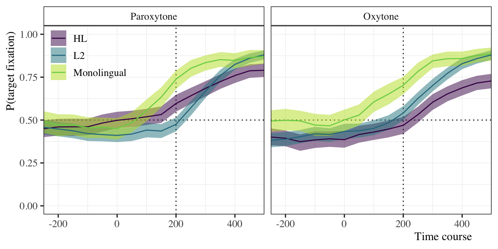

Code
source(here::here("scripts", "00_libraries.R"))
source(here::here("scripts", "01_helpers.R"))Eye-tracking data clean-up
source(here::here("scripts", "00_libraries.R"))
source(here::here("scripts", "01_helpers.R"))# Load data and fix accent mark chars
stress_50_temp <- read_tsv(here("data", "raw", "stress_extract_50.txt")) %>%
mutate(target = str_replace(target, "ó", "o"))Important variable info:
How much data do we lose by selecting only accurate trials: 0.0055517.
Now we take a look at item lengths and check some landmarks.
itemlength <- stress_50_temp %>%
select(., target, t01, t04, t05, t06) %>%
distinct() %>%
mutate(
syll1_dur = t04 - t01,
syll2_dur = t06 - t04,
C3_dur = t05 - t04,
item_dur = t06 - t01,
derived_dur = syll1_dur + syll2_dur,
check = item_dur == derived_dur
)
knitr::kable(itemlength %>% head, format = "pandoc")| target | t01 | t04 | t05 | t06 | syll1_dur | syll2_dur | C3_dur | item_dur | derived_dur | check |
|---|---|---|---|---|---|---|---|---|---|---|
| plancho | 742 | 1091 | 1167 | 1262 | 349 | 171 | 76 | 520 | 520 | TRUE |
| firma | 930 | 1185 | 1274 | 1336 | 255 | 151 | 89 | 406 | 406 | TRUE |
| busco | 907 | 1207 | 1230 | 1332 | 300 | 125 | 23 | 425 | 425 | TRUE |
| canta | 712 | 1081 | 1092 | 1177 | 369 | 96 | 11 | 465 | 465 | TRUE |
| compra | 878 | 1207 | 1262 | 1336 | 329 | 129 | 55 | 458 | 458 | TRUE |
| gasto | 1025 | 1320 | 1334 | 1457 | 295 | 137 | 14 | 432 | 432 | TRUE |
Ok, let’s tidy and center the time course.
stress_50_hold <- stress_50_temp %>%
# create id variable
rename(id = RECORDING_SESSION_LABEL) %>%
# create group variable
separate(id, into = c("group", "trash"), sep = 3, remove = F) %>%
#select and rename variables of interest
dplyr::select(id, trial = TRIAL_INDEX, bin = BIN_INDEX,
target_count = AVERAGE_IA_1_SAMPLE_COUNT,
target_prop = `AVERAGE_IA_1_SAMPLE_COUNT_%`,
distractor_count = AVERAGE_IA_2_SAMPLE_COUNT,
distractor_prop = `AVERAGE_IA_2_SAMPLE_COUNT_%`,
elsewhere_count = AVERAGE_IA_0_SAMPLE_COUNT,
elsewhere_prop = AVERAGE_IA_0_SAMPLE_COUNT,
accuracy = ACCURACY, rt = RT, block, stress = cond,
offset_prev_word = t01,
onset_v1 = t02,
onset_c2 = t03,
onset_c3 = t04,
onset_v2 = t05,
offset_target = t06,
end_sentence = t07, target, version, group) %>%
# remove incorrect
filter(., accuracy == 1) %>%
# Create eLog variable and respective wts
mutate(eLog = log((target_count + 0.5) / (50 - target_count + 0.5)),
wts = 1 / (target_count + 0.5) + 1 / (50 - target_count + 0.5)) %>%
# Select necessary columns
dplyr::select(id, group, target, stress, bin,
target_count, target_prop, eLog, wts, onset_c3,
elsewhere_count, elsewhere_prop, distractor_count, distractor_prop) %>%
# Get suffix onset label and center at 0 for each
# participant for each item
# change 'onset_c3' in previous `select` call to center around diff. landmark
mutate(lm_bin = (onset_c3 / 50) %>% ceiling(.),
t_onset = if_else(bin == lm_bin, TRUE, FALSE)) %>%
group_by(id, target) %>%
mutate(time_zero = center_timecourse(bin, t_onset, event = "TRUE")) %>%
ungroup()Checks and fixes
# Remove unwanted groups
stress_50 <- stress_50_hold %>%
filter(!(group %in% c("ams", "ims"))) %>%
mutate(id = fct_recode(id, ihs02 = "ih02"),
group = fct_recode(group, ihs = "ih0"),
group = case_when(
group %in% c("ihs", "ahs") ~ "HL",
group %in% c("ies", "aes") ~ "L2",
TRUE ~ "Monolingual"),
stress = if_else(stress == 2, "Oxytone", "Paroxytone")
)
# N x group
stress_50 %>%
group_by(group) %>%
summarize(n = n_distinct(id))# A tibble: 3 × 2
group n
<chr> <int>
1 HL 49
2 L2 65
3 Monolingual 30# Plot check
stress_50 %>%
filter(time_zero > -6 & time_zero < 11) %>%
mutate(stress = fct_relevel(stress, "Paroxytone")) %>%
ggplot(., aes(x = time_zero, y = target_prop)) +
facet_grid(. ~ stress) +
geom_hline(yintercept = 0.5, lty = 3) +
geom_vline(xintercept = 0 + 4, lty = 3) +
stat_summary(aes(fill = group), fun.data = mean_cl_boot, geom = "ribbon",
alpha = 0.5) +
stat_summary(aes(color = group), fun = mean, geom = "line") +
scale_color_viridis_d(name = NULL, end = 0.8) +
scale_fill_viridis_d(name = NULL, end = 0.9) +
coord_cartesian(xlim = c(NA, 10), ylim = c(-0.05, 1.05), expand = F) +
scale_x_continuous(breaks = seq(-4, 12, 4), labels = seq(-200, 600, 200)) +
labs(y = "P(target fixation)", x = "Time course") +
theme(legend.position = c(0.1, 0.86)) +
NULL
Looks ok. Now we add proficiency and use data for the bilingual groups, then we save the complete data frame and split it by ID so it will fit on github.
# Load prof/use data
prof_use <- read_csv(here("data", "tidy", "prof_use.csv")) %>%
select(id, prof, use, remove) %>%
filter(remove == 0) %>%
mutate(prof_z = (prof - mean(prof)) / sd(prof),
use_z = (use - mean(use)) / sd(use))
# Get vector of IDs to keep
keep_ids <- c(
prof_use$id %>% unique,
filter(stress_50, group == "Monolingual") %>% pull(id) %>%
unique %>% as.character
)
# Check n per group to see if filter is correct
# Should be 42 HL and 50 L2
stress_50 %>%
filter(id %in% keep_ids) %>%
group_by(group) %>%
summarize(n = n_distinct(id))# A tibble: 3 × 2
group n
<chr> <int>
1 HL 42
2 L2 50
3 Monolingual 30# Join data frames and save
if(F) {
left_join(stress_50 %>% filter(id %in% keep_ids), prof_use, by = "id") %>%
select(id:group, prof:use, prof_z:use_z, target:time_zero) %>%
write_csv(here("data", "tidy", "stress_50ms.csv")) %>%
group_by(id) %>%
group_walk(~ write_csv(.x,
here("data", "tidy", "by_id_50ms",
paste0(.y$id, "_stress_50ms.csv"))))
}